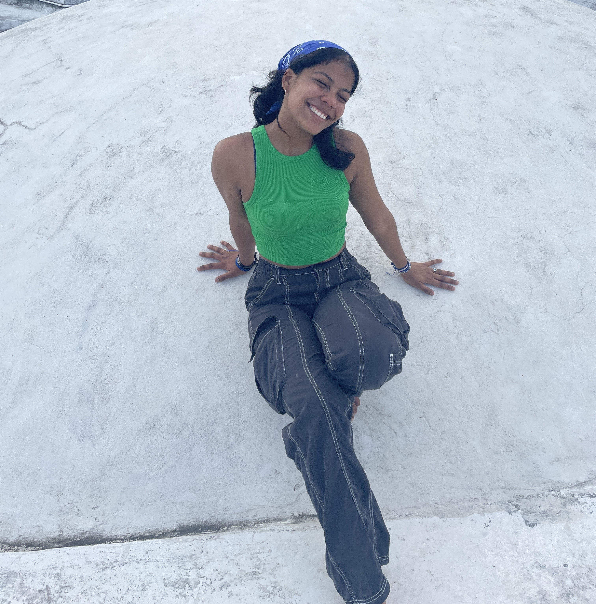

About Me
👋 Hey there! I’m Arianne Villavicencio, an aspiring engineer passionate about cutting-edge technology ⚡, human-computer interaction 🖥️, neuroscience 🧠, and public health 🏥. I’m currently double-majoring in Interactive Media & Psychology (Brain and Cognitive Sciences) 🧠 with a minor in Electrical Engineering 🔧 at NYU Abu Dhabi 🌍.
🌍 I’m from Managua, Nicaragua, a country known as "El país de lagos y volcanes" 🌋🌊. Growing up in a place shaped by nature’s power and resilience has fueled my passion for innovation, problem-solving, and technology that creates real-world impact.
💡 With a strong background in the natural sciences 🔬, my work focuses on AI 🤖, XR (AR/VR) 🕶️, haptics ✋, brain-computer interfaces 🧠💻, and engineering solutions ⚙️ that enhance human interaction with technology. I’m particularly interested in how emerging tech can push boundaries in neuroscience 🧠, cognitive augmentation 🚀, immersive systems 🌐, and healthcare innovation 🏥.
✨ Let’s connect and explore new ideas together! 🚀 🔗 LinkedIn 💼 | 💻 GitHub